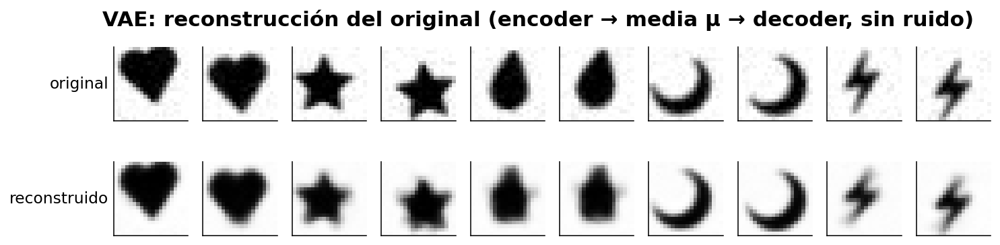
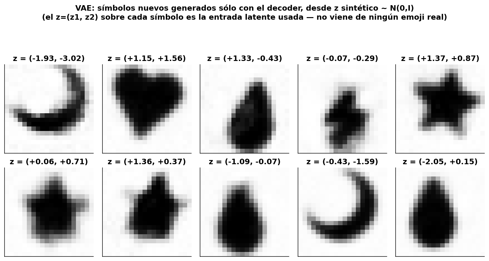

Autoencoders
TP5 — Deep Learning
Sistemas de Inteligencia Artificial · ITBA · 1Q 2026
Nicolás Valentín Arias · Tomás Pinausig · Mateo Pirola · Katia Menshikoff
Dataset: 32 caracteres ASCII


La configuración base
| Arquitectura | 35-20-2-20-35 (capas [35, 20, 2, 20, 35]) |
| Activaciones | tanh · identity (latente) · tanh · sigmoid (salida) |
| Init de pesos | auto por capa (Xavier para tanh/sigmoid; uniforme en identity del latente) |
| Loss | BCE — heredada del TP3 (datos binarios) |
| Optimizador | SGD |
| Épocas · batch | 6000 · 32 (full-batch) · semilla 0 |
- Aprovechamos lo implementado en el MLP del TP3.
Elección de optimizador
| Variamos | SGD(0.5) · Momentum(0.1) · Adam(0.01) |
| Config fija | 35-20-2-20-35 · tanh · BCE · latente 2 · 6000 ep |
Adam llega a 0 px

- Vemos sobre las barras del gráfico de error la cantidad de ascii recuperados perfecto / sin error.
- SGD se estanca (5px), Momentum casi (1px), Adam: 0 px. → adoptamos Adam(0.01).
- Vemos que usar Adam ya logra superar la limitación del espacio latente de dimensión 2.

¿Qué tan grande el paso? (learning rate)
| Variamos | lr ∈ 0.0003 · 0.01 · 0.3 |
| Config fija | 35-20-2-20-35 · tanh · BCE · Adam · latente 2 |
0.01 es el punto justo

- Vemos sobre las barras del gráfico de error la cantidad de ascii recuperados perfecto / sin error.
- LR 0.0003 tarda — con más épocas podría llegar al mismo resultado; LR 0.3 no aprende (error de 28px!); LR 0.01 llega a 0.
- Elección final → LR 0.01
Arquitectura → Tamaño de la capa oculta
| Variamos | () · 10 · 20 · 30 · 20+20 (por lado) |
| Config fija | tanh · BCE · Adam(0.01) · latente 2 |
| Nota | (20) = 1 capa de 20 por lado; (20+20) = 2 capas apiladas |
20 neuronas es el mínimo justo

- 20 → 0 px. 30 y 20+20 empatan → elegimos una capa con 20 neuronas.
Tamaño del espacio latente
| Variamos | dimensión latente ∈ 1 · 2 · 3 |
| Config fija | 35-20-·-20-35 · tanh · BCE · Adam(0.01) |
| Nota | la consigna pide 2D; lo confirmamos |
Con 1 solo se aprende un subconjunto

- 1D solo recupera un subconjunto (14/32): no se pueden separar 32 letras en una recta. 2D → 0 px.

Mapa del espacio latente

Inventar letras nuevas


Denoising — Limpiar ruido
¿Cómo ensuciamos las letras?

- Ruido bit-flip: cada píxel se invierte con probabilidad
p, fresco en cada época.
¿Y si le damos ruido al AE de 1a?

- No fue entrenado para limpiar: la salida se deforma a medida que sube el ruido.
El AE de 1a no limpia

- El error crece con el ruido de entrada. Hay que entrenar la red específicamente para limpiar.
Entrenemos un denoiser
- Generamos las entradas ensuciando cada letra con nuestro ruido bit-flip; regeneramos los inputs en cada época (la red nunca ve dos veces la misma "mancha").
- Entrenamos la red con esas entradas sucias, y le exigimos que devuelva la letra original limpia.
- Es la misma red y la misma loss (BCE) que el autoencoder; ahora le pedimos, en vez de
x → x, sucio → limpio. - Para las redes entrenadas, las testeamos a varios niveles de ruido de entrada, generando 30 realizaciones por nivel × 32 letras. Eso da 30 × 32 = 960 entradas por cada nivel de ruido.
Nueva arquitectura — Espacio latente
Probamos agrandar la dimensión del espacio latente: 2, 5, 10 y 20 neuronas.

- Entrenamos cada modelo con 15% de ruido de entrada.
- Después evaluamos un forward pass con entradas al 10%, 20% y 30% de ruido; en el gráfico de la izquierda medimos el promedio de px incorrectos contra la letra original sin ruido.
- En el gráfico de la derecha medimos cuántas letras se recuperan "perfecto" con 20% de ruido de entrada (perfecto = error de px ∈ {0, 1}).
Nueva arquitectura — Capas ocultas

- Fijamos el espacio latente en 10 neuronas. Hacemos un barrido del tamaño de la capa oculta {20, 30, 35, 40} y entrenamos cada modelo con 15% de ruido de entrada.
- En el gráfico de la izquierda medimos nuevamente la cantidad promedio de px incorrectos en la salida.
- Para cada red ya entrenada, en el gráfico de la derecha medimos el porcentaje de letras recuperadas perfectas con 20% de ruido de entrada.
Nueva arquitectura — Capas ocultas
Vemos una mejora clara en el salto de 20 → 30 neuronas; después, aumentar capacidad da diminishing returns.
- Nos quedamos con capa oculta de 30 neuronas: captura casi toda la mejora, sin pagar el costo extra de seguir agrandando la red.
¿Cuánto ruido al entrenar?

- Con la red final 35 - 30 - 10 - 30 - 35, preguntamos cómo se comporta al entrenar con distintos niveles de ruido de entrada. Entrenamos varios modelos, haciendo un barrido de ruido de entrada {5%, 15%, 30%}.
- Testeamos cada modelo entrenado con un forward pass con ruido de entrada {limpio, 5, 10, 15, 20, 25, 30, 35, 40}. Graficamos la cantidad promedio de px incorrectos para cada red.
¿Cuánto ruido al entrenar?
- Vemos que cada modelo se comporta mejor en su zona de ruido de entrada: exactamente en su nivel de ruido entrenado y cerca de ese nivel.
- El denoiser entrenado al 5% se comporta levemente mejor con entrada completamente limpia, y es sobrepasado por la red entrenada al 15% desde 5% de ruido en adelante.
- Además, la red entrenada al 5% es la que peores respuestas da desde 15% de ruido en adelante.
- Comparado con el resto, el denoiser entrenado con 30% de ruido devuelve letras más ruidosas entre 0% y 30%. Recién supera a las otras redes desde 30% en adelante.
Cualitativamente, ¿qué efecto tiene 30% de ruido sobre los inputs?

El denoiser entrenado al 30% parece comportarse mejor que el resto para niveles altos de ruido, con 6px errados en promedio — visualmente vemos que la letra recuperada no reconstruye la original :(
Resultado del denoiser

- Capa oculta de 30 neuronas, latente de 10 neuronas, entrenado con entradas al 15% de ruido.
- Probamos darle entradas con ruido {10%, 15% y 20%}; vemos que deja ≤1 px de error en el 80% de las letras a 15% de ruido.
- Cada barra resume 50 generaciones ruidosas × 32 letras por nivel de ruido (1600 entradas evaluadas por nivel evaluado).
Limpio / sucio / recuperado

Ahora queremos generar, no sólo reconstruir
El autoencoder de 1a guarda un punto por imagen. Si elegimos un punto nuevo del espacio latente, casi siempre cae en una zona vacía que la red nunca vio → sale ruido.
- Para generar muestras nuevas necesitamos que el espacio latente tenga una forma conocida, donde cualquier punto que elijamos sea válido.
- Esa es la idea del Autoencoder Variacional (VAE).
Datos nuevos: 5 emojis

- Elegimos 5 emojis (corazón, estrella, gota, luna, rayo) como siluetas rellenas a 20×20; descartamos la versión de contornos que se confundía a baja resolución.
- Generamos 700 muestras con aumentaciones propias a partir de los símbolos originales de OpenMoji.
Arquitectura del VAE
ENCODER cuello DECODER
┌─→ μ (2) ─────┐
x(400) ─→ tanh(128) ─→┤ ├─→ z = μ + σ·ε (2) ─→ tanh(128) ─→ sigmoide(400)
└─→ logvar(2) ─┘
- Capas 400 → 128 → 2 → 128 → 400: entrada/salida de 400 píxeles (20×20), ocultas de 128, espacio latente de 2.
- El encoder termina en dos cabezas lineales, μ y logvar (predecimos log-varianza para que σ = exp(½·logvar) sea siempre positiva).
- En el cuello, el truco de reparametrización
z = μ + σ·εcon ε ∼ N(0,1); activación identidad. - Activaciones tanh en las ocultas y sigmoide en la salida; loss = BCE + KL.
Entrenamos con Adam, learning rate 1e-3 —el mismo optimizador que ya teníamos del TP3—, durante 3500 épocas con mini-batches de 128, sobre las 700 muestras de emojis (5 clases × 140 aumentaciones) a 20×20.
Espacio latente: AE vs VAE

- Graficamos la media latente de cada emoji: a la izquierda un autoencoder común (sin término KL), a la derecha el VAE.
- Sin el KL el latente queda disperso (escala de ±decenas): samplear N(0,I) cae en zona vacía → ruido.
- Con el KL el latente es compacto y centrado en 0 (±2) pero conserva los 5 cúmulos → samplear N(0,I) sí da emojis.
El mapa de los emojis

- Cada clase ocupa su propia zona dentro de N(0,I): no es una sola nube uniforme, conserva 5 cúmulos. Las circunferencias marcan 1σ y 2σ.
Reconstruir el original

Generar símbolos nuevos

- Sampleamos puntos sintéticos z ∼ N(0,I) (el (z1, z2) sobre cada símbolo) y los pasamos sólo por el decoder — sin encoder, sin ningún emoji de entrada.
- Salen muestras nuevas (no copias): variaciones continuas de los 5 prototipos.
El mapa completo decodificado

- Decodificamos una grilla de puntos z ∈ [-2.5, 2.5]²: los emojis se transforman de a poco uno en otro.